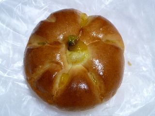
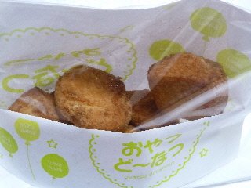

パティ春日店の北海道かぼちゃのクリームパン
2011/09/18
みしまや春日店内のベーカリーショップでパンを買いました。

かぼちゃっていうとアンパンって思うんですけど、クリームパンもあるんですね。
甘さ控えめな感じで優しい味でした。

これはレモンのおやつっていう、レモン風味のドーナッツです。
見た目がちょっとチキンナゲットみたいですね。
松江市春日町630みしまや春日店内
2011/09/18
みしまや春日店内のベーカリーショップでパンを買いました。

かぼちゃっていうとアンパンって思うんですけど、クリームパンもあるんですね。
甘さ控えめな感じで優しい味でした。

これはレモンのおやつっていう、レモン風味のドーナッツです。
見た目がちょっとチキンナゲットみたいですね。